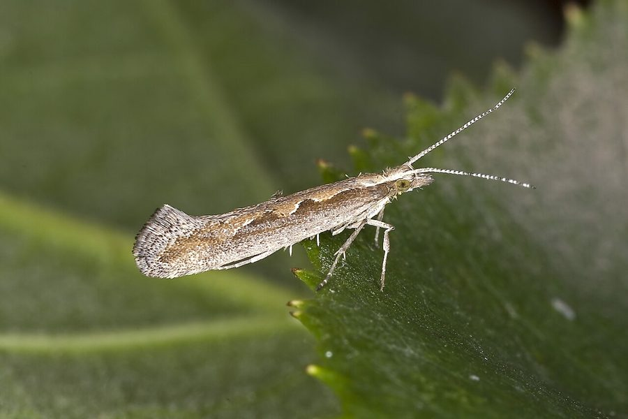

हीरक पतंगाDiamondback Moth
Plutella xylostella · Plutellidae · INS-0155

- Scientific name वैज्ञानिक नाम
- Plutella xylostella (Linnaeus, 1758)
- Family कुल
- Plutellidae
- Hindi हिंदी
- हीरक पतंगा
- Local names स्थानीय नाम
- diamondback moth, diamond back moth, heerak patanga, cabbage moth
- Status here यहाँ की स्थिति
- native
- Movement आवागमन
- Resident, here all year
- Known from कहाँ दर्ज
- Others have published records from the wider Awadh–Purvanchal plain, none yet from Basti–Ayodhya अवध–पूर्वांचल से दूसरों के प्रकाशित अभिलेख, बस्ती–अयोध्या से अभी नहीं
- IUCN IUCN
- not evaluated
- Review समीक्षा
- audited and independently read
When to look कब देखें
Present all year. साल भर मौजूद।
Uses and possibilities उपयोग और संभावनाएँ
Drawn from the documented uses in the profile below, where each is labelled traditional, current or a research lead. All uses →
हीरक पतंगा / Diamondback Moth
Plutella xylostella (Linnaeus, 1758) — Plutellidae
हीरक पतंगा — यह दुनिया के सबसे घातक फसल कीटों में से एक है। इसकी नन्ही, भूरी-सफ़ेद पतंगा होती है, जिसके पंखों पर सफ़ेद हीरे के आकार की कतारें बनी होती हैं। कैटरपिलर बहुत छोटा, हरा, पतला होता है और गोभी, मूली, सरसों, और सब्जियों की पत्तियों को खातें हुए सुरंग बनाता है। यह पत्ती के अंदर घूमता है (मिनर), पत्ती को खाली कर देता है। ज़्यादा तापमान में कई पीढ़ी एक साथ हो सकती हैं। भारत में इस कीट ने कई बार महामारी का रूप धारण किया है और सब्ज़ियों की फसलें बर्बाद कर दी हैं।
Quick Identification त्वरित पहचान
| Feature | Description |
|---|---|
| Size | Very small moth; wingspan 13–16 mm |
| Colour | Greyish-brown; lighter coloration on wings |
| Wings | When at rest, forms a roof-like shape; white or pale diamond-shaped marks along the back (closed wings) |
| Pattern | Distinctive white or pale stripe down the middle of closed wings |
| Larva | Pale green, very small (3–4 mm); found within leaf tissue as a leaf-miner |
Field tip: An extremely small brown moth; look for the characteristic diamond-shaped pale markings on the closed wings when the moth is at rest. On brassica plants, look for pale tunnels and holes in leaves with greenish frass visible.
हिंदी — कैसे पहचानें: बहुत छोटी, भूरी पतंगा। बंद पंखों पर सफ़ेद हीरे की कतार। कैटरपिलर बहुत पतला, हरा, पत्ती के अंदर सुरंग बनाता है।
Morphology आकारिकी
Biometrics (typical measurements):
| Measurement | Range |
|---|---|
| Wingspan | 13–16 mm |
| Body length | 5–6 mm |
| Forewing length | 6–7.5 mm |
Adult description: An extremely small moth with greyish-brown coloration. When at rest, the wings fold roof-like over the body, revealing a characteristic white or pale-coloured stripe running down the middle of the closed wings, formed by the pale margins of the forewings. The wing tips often have dusky coloration. The head and thorax are brown with fine scales.
Larval Stage
Caterpillar: Extremely small, pale green to greenish-yellow, smooth, reaching only 3–4 mm in length when fully grown. The larva is a leaf-miner, feeding within the tissue between the upper and lower leaf surfaces, creating characteristic pale or transparent tunnels filled with dark frass (droppings). Multiple larvae may be found within a single leaf.
Life Cycle / Phenology जीवन चक्र
| Stage / Month | Event |
|---|---|
| Egg | Laid on host plant leaf undersurface; minute, hatches in 3–4 days |
| Larva (instar 1–4) | 2–3 weeks; mine within leaf tissue |
| Prepupa | 1 day; larva leaves leaf, constructs pupal cocoon |
| Pupa | Within silken cocoon on leaf or plant debris; 5–7 days in warm weather |
| Adult | Emerges; lifespan 2–3 weeks; many generations per year |
| Peak season | April–November; multiple overlapping generations |
हिंदी: गर्मी में तेजी से पीढ़ियाँ आती हैं। कैटरपिलर 2–3 हफ़्तों में बड़ा हो जाता है, फिर प्यूपा बन जाता है।
Host Plants or Prey आहार
Larval hosts:
- Cabbage (Brassica oleracea var. capitata)
- Cauliflower (Brassica oleracea var. botrytis)
- Mustard (Brassica juncea)
- Radish (Raphanus sativus)
- Bok choy and other brassicas
- Turnip (Brassica rapa)
- Wild mustards (Brassica campestris, Raphanus spp.)
Food preference: Prefers young, tender leaves; all plant parts are susceptible.
Predators / Natural Enemies शत्रु
- Parasitoid wasps: Highly effective parasitoids including Diadegma spp. and Cotesia plutellae.
- Parasitoid flies: Tachinid flies parasitize larvae.
- Predatory insects: Ground beetles, spiders, and lacewings feed on eggs and small larvae.
- Birds: Small insectivorous birds feed on adults.
- Entomopathogenic organisms: Beauveria, Metarhizium, and nucleopolyhedroviruses.
Agricultural / Human Relevance कृषि प्रासंगिकता
Major pest status. The Diamondback Moth is one of the world's most destructive agricultural pests, causing severe damage to cruciferous crops including cabbage, cauliflower, and mustard. Larval damage from leaf-mining and leaf-eating can result in total crop loss if populations are unchecked. It has been responsible for major agricultural crises in several Asian countries, including India.
Today. Extremely common in all cruciferous crop-growing regions. Populations are managed through integrated pest management including cultural practices, biocontrol, and chemical control. Resistance to multiple pesticides has developed in some populations, necessitating careful pest management strategies.
Research direction (a lead, not a result). Host-plant resistance breeding in brassicas; biological control through parasitoid wasps; pheromone-based monitoring and control; pesticide resistance management; population dynamics and seasonal phenology in eastern Uttar Pradesh.
हिंदी: सबसे बड़ा सब्ज़ी कीट है। गोभी और सरसों को बर्बाद कर सकता है।
Expected Locally स्थानीय रूप से अपेक्षित
Not a field record. Written from published accounts for eastern Uttar Pradesh. No confirmed local sighting yet — if you have seen it, that is what the atlas needs.
अभी तक स्थानीय पुष्टि नहीं। यह विवरण प्रकाशित स्रोतों से है, किसी अवलोकन से नहीं।
Expected on all cruciferous crops throughout Basti district and eastern Uttar Pradesh, particularly during the rabi season (October–March) when cabbage and mustard are grown, and year-round during warm months. Damage is visible as pale tunnels and holes in leaves with characteristic dark frass visible. The moth is present in all vegetable-growing regions and wild cruciferous plants.
Distribution वितरण
Global range: Worldwide distribution; now present on every continent. Native to Africa and the Mediterranean region; spread globally through trade.
In India: Common throughout the country, particularly in vegetable-growing regions.
In Uttar Pradesh: Present in all vegetable-growing districts; a major pest in rabi season crops.
In Basti district / eastern UP: Expected in all cruciferous crop-growing areas and adjacent fields.
Research Questions शोध प्रश्न
Anyone can investigate these | कोई भी इन प्रश्नों की जाँच कर सकता है
- How many larval generations occur during the rabi season (October–March) in eastern UP? / कितनी पीढ़ियाँ होती हैं? — Grow brassicas from seed; monitor populations weekly.
- Which brassica crops (cabbage, cauliflower, mustard, radish) suffer the highest damage? — Compare damage levels across different crops grown side by side.
- What is the effectiveness of parasitoid wasps (Cotesia plutellae) in controlling larvae in field conditions? — Release wasps; monitor parasitism rates.
- How does neem spray affect moth populations and their natural enemies? — Spray brassica patches; compare population trends.
- Can cultural practices such as crop rotation and sanitation reduce pest pressure? / संस्कृति विधियों से कीट को कम किया जा सकता है? — Compare practices in farmer fields.
Similar Species मिलती-जुलती प्रजातियाँ
| Species | How to tell apart | हिंदी |
|---|---|---|
| Plutella other species | No other Plutella spp. are known from India | अन्य प्लूटेल्ला प्रजातियाँ भारत में नहीं |
| Other small brassica moths | Different wing patterns; lack the characteristic diamond-shaped markings | दूसरी सब्ज़ी पतंगाएँ — अलग निशान |
Field rule: An extremely small brown moth with characteristic white diamond-shaped markings on closed wings, found on cruciferous crops, combined with leaf-miner damage patterns and small pale tunnels in leaves, is the Diamondback Moth.
Taxonomy & Classification वर्गीकरण
Original description. Described by Linnaeus in 1758 in Systema Naturae, 10th edition, from European specimens. Type locality is Europe (though probably a pantropical species, with early records from cultivated plants). The genus Plutella was established by Schrank in 1802; the specific epithet xylostella is from Greek, meaning "wood-star."
Subspecies. Monotypic — no subspecies are currently recognised, despite worldwide distribution and genetic variation.
Family and order placement. Order Lepidoptera, family Plutellidae (diamond-back moths and relatives). The Plutellidae are small, specialized moths, many of which are agricultural pests.
Phylogenetic notes. Plutella xylostella is the type species of the genus and family, with no close relatives currently known from the Indian subcontinent.
IUCN status rationale. Not formally assessed. Extremely abundant globally; no conservation concerns.
Photo Gallery फोटो गैलरी
No photos yet — add field photos to media/species/diamondback_moth/ and run node scripts/sync_photos.js.
Wanted:
- Adult moth at rest (characteristic diamond markings visible)
- Larva within leaf (leaf-miner damage)
- Damaged brassica leaf with tunnels
- Adult in flight
References संदर्भ
- Linnaeus, C. (1758). Systema Naturae. 10th edition, Vol. 1, p. 533. [original description]
- Nayar, K.K., Ananthakrishnan, T.N. & David, B.V. (1989). General and Applied Entomology. 2nd edition. McGraw-Hill, New Delhi.
- Talekar, N.S. & Shelton, A.M. (1993). Biology, ecology, and management of the diamondback moth. Annual Review of Entomology, 38: 275–301.
- Kumar, V. & Rao, A. (2015). Insect pests of vegetable crops and their management. Indian Journal of Horticulture, 72(4): 511–520.
- Sarfraz, M., Dosdall, L.M. & Keddie, B.A. (2006). Diamondback moth–host plant interaction: Implications for pest management. Crop Protection, 25(7): 625–636.
- GBIF Occurrence Data — Plutella xylostella, India (2010–2025). GBIF taxon key: 1313656.
Source file: species/fauna/insects/diamondback_moth.md